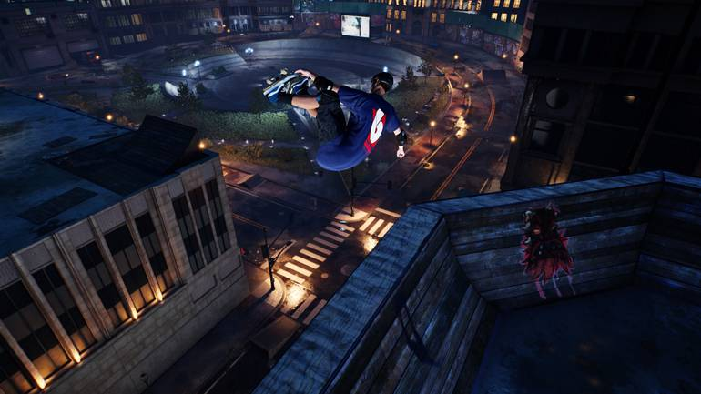

about tony hawk pro skater 2
Do you think you're good at Tony Hawk? Not as much as the guy who finish Tony Hawk's Pro Skater 2 in 3 minutes and 26 seconds! Watch the video of him beating the game here:
Read moreActivision and Vicarious Visions have done it again with THPS 1 + 2 Remastered and made a stone cold classic even better than we remember. But which are the best and worst levels in the second title?
Read moreIn 2020 the Tony Hawk's Pro Skater series is returning with another game, this time a remastered version of the first two games in the franchise. In addition to the many striking tracks and songs, you must certainly remember the secret characters of Tony Hawk's Pro Skater. Throughout the franchise, various pop culture figures have appeared in the game such as Spider-Man, Shrek the ogre, and even some Star Wars characters.
Read more